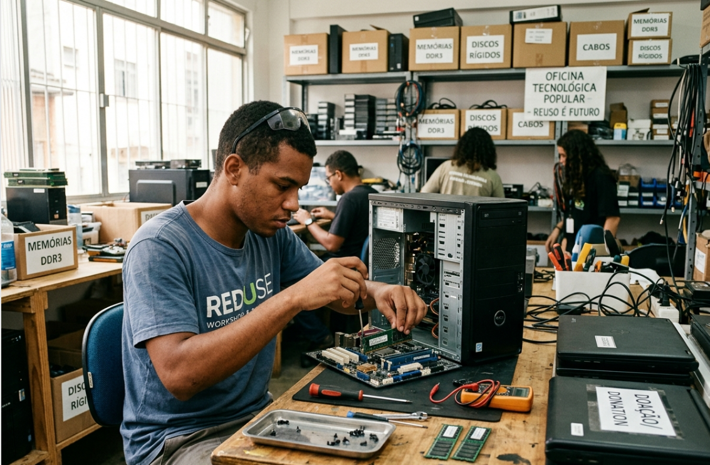
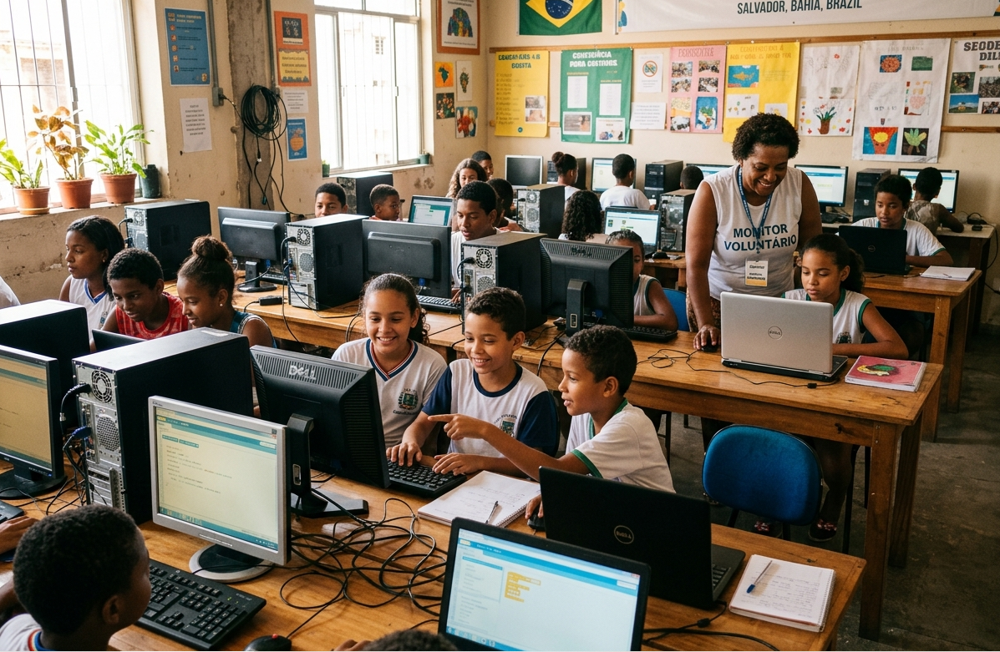
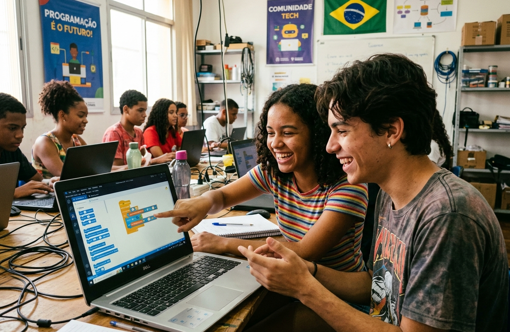

Inclusão Digital Jovem
Oficinas práticas de introdução à lógica de programação e ferramentas digitais para estudantes da rede pública.
Saiba mais →Coletamos computadores que seriam descartados por empresas e construímos laboratórios de aprendizado digital para jovens de comunidades vulneráveis.
Como transformamos equipamentos parados em oportunidades reais.

Oficinas práticas de introdução à lógica de programação e ferramentas digitais para estudantes da rede pública.
Saiba mais →
Instalação de polos equipados com internet de alta velocidade e computadores recuperados em associações de bairro.
Saiba mais →
Coleta empresarial com descarte ecológico certificado e triagem de componentes para montagem de novas máquinas.
Saiba mais →Jovens e Crianças Impactados
Computadores Recondicionados
Laboratórios Criados em Escolas
De Conclusão nos Cursos

"Eu até assistia às aulas de tecnologia na escola, mas não tinha computador em casa para treinar nem para fazer os exercícios práticos. Quando a Conecta+ estruturou o polo do nosso bairro com computadores doados, pude finalmente sentar, praticar código de verdade e montar meus primeiros projetos. Foi essa ferramenta que me abriu as portas para o meu primeiro estágio."
Maria Eduarda, 19 anos
Ex-aluna do polo comunitário e estagiária de Front-end